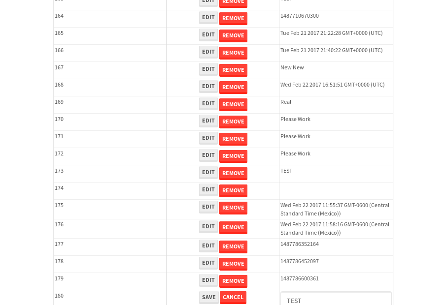
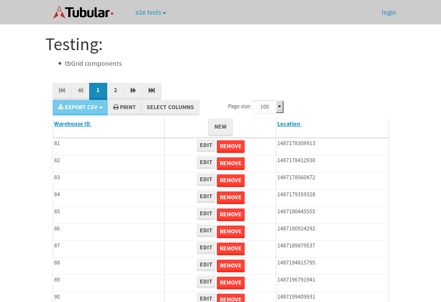

tbColumn.Grid Sorting - 27.842sTests: 5Skipped: 0Failures: 0 should sort data in ascending order then on descending order when sorting by Order Id column - 5.386sTests passed: 100.00%should order data in ascending order when click-sorting an unsorted text column - 5.018sTests passed: 100.00%should order data in descending order when click-sorting an ascending-sorted text column - 5.825sTests passed: 100.00%should order data in ascending order when click-sorting an unsorted date column - 5.791sTests passed: 100.00%should order data in descending order when click-sorting twice an unsorted date column - 5.821sTests passed: 100.00%
tbEmptyForm - 3.674sTests: 3Skipped: 0Failures: 1 should have an empty required field - 0.893sTests passed: 100.00%should not be able to click on save - 0.609sExpected null not to be null null.✗Tests passed: 50.00%should load default value for numeric field - 0.539sTests passed: 100.00%
Tubular Filters.tbColumnFilter - 112.315sTests: 12Skipped: 0Failures: 0 should cancel filtering when clicking outside filter-popover - 9.284sTests passed: 100.00%should disable Value text-input for "None" filter - 6.715sTests passed: 100.00%should disable apply button for "None" filter - 6.901sTests passed: 100.00%should decorate popover button when showing data is being filtered for its column - 12.431sTests passed: 100.00%should correctly filter data for the "Equals" filtering option - 8.916sTests passed: 100.00%should correctly filter data for the "Not Equals" filtering option - 8.564sTests passed: 100.00%should correctly filter data for the "Contains" filtering option - 9.303sTests passed: 100.00%should correctly filter data for the "Not Contains" filtering option - 9.354sTests passed: 100.00%should correctly filter data for the "Starts With" filtering option - 7.206sTests passed: 100.00%should correctly filter data for the "Not Starts With" filtering option - 7.147sTests passed: 100.00%should correctly filter data for the "Ends With" filtering option - 7.614sTests passed: 100.00%should correctly filter data for the "Not Ends With" filtering option - 7.59sTests passed: 100.00%
Tubular Filters.tbColumnDateTimeFilter - 137.411sTests: 12Skipped: 0Failures: 0 should cancel filtering when clicking outside filter-popover - 7.218sTests passed: 100.00%should disable Value text-input for "None" filter - 6.907sTests passed: 100.00%should disable apply button for "None" filter - 6.934sTests passed: 100.00%should clear filtering when clicking on Clean button - 18.052sTests passed: 100.00%should decorate popover button when showing data is being filtered for its column - 12.498sTests passed: 100.00%should correctly filter data for the "Equals" filtering option - 6.951sTests passed: 100.00%should correctly filter data for the "Not Equals" filtering option - 7.16sTests passed: 100.00%should correctly filter data for the "Between" filtering option - 12.341sTests passed: 100.00%should correctly filter data for the "Greater-or-equal" filtering option - 12.586sTests passed: 100.00%should corretlly filter data for the "Greater" filtering option - 12.238sTests passed: 100.00%should correctly filter data for the "Less-or-equal" filtering option - 11.976sTests passed: 100.00%should correctly filter data for the "Less" filtering option - 11.961sTests passed: 100.00%
Tubular Filters.tbColumnOptionsFilter - 82.219sTests: 3Skipped: 0Failures: 0 should cancel filtering when clicking outside filter-popover - 8.987sTests passed: 100.00%should decorate popover button when showing data is being filtered for its column - 12.348sTests passed: 100.00%should filter column-elements in accordance to the selected filter when selecting a single option - 49.766sTests passed: 100.00%
Tubular Filters.tbTextSearch - 50.557sTests: 5Skipped: 0Failures: 0 min-chars is not set - 1.454sTests passed: 100.00%should filter data in searchable-column customer name to matching inputted text, starting from 3 characters - 6.929sTests passed: 100.00%should filter data in searchable-column shipper city to matching inputted text, starting from 3 characters - 12.52sTests passed: 100.00%should show clear button when there is inputted text only - 7.351sTests passed: 100.00%should clear filtering when clicking clear button - 16.644sTests passed: 100.00%
tbForm related components.tbCheckboxField - 9.002sTests: 2Skipped: 0Failures: 0 should save changes on "SAVE" - 4.219sTests passed: 100.00%should discard changes on "CANCEL" - 3.331sTests passed: 100.00%
tbForm related components.tbDropDownEditor - 12.287sTests: 5Skipped: 0Failures: 0 should set initial input value to the value of "value" attribute when defined - 2.195sTests passed: 100.00%should show the component name value in a label field when "showLabel" attribute is true - 1.855sTests passed: 100.00%should show a help field equal to this attribute, is present - 2.487sTests passed: 100.00%should submit modifications to item/server when clicking form "Save" - 3.026sTests passed: 100.00%should NOT submit modifications to item/server when clicking form "Cancel" - 2.111sTests passed: 100.00%
tbForm related components.tbTextArea - 18.896sTests: 7Skipped: 0Failures: 0 should set initial input value to the value of "value" attribute when defined - 2.67sTests passed: 100.00%should be invalidated when the number of chars is not in the range of "min" and "max" attributes - 2.803sTests passed: 100.00%should show the component name value in a label field when "showLabel" attribute is true - 2.016sTests passed: 100.00%should show a help field equal to this attribute, is present - 2.083sTests passed: 100.00%should require the field when the attribute "required" is true - 2.024sTests passed: 100.00%should submit modifications to item/server when clicking form "Save" - 3.67sTests passed: 100.00%should NOT submit modifications to item/server when clicking form "Cancel" - 2.467sTests passed: 100.00%
tbForm related components.tbDateEditor - 14.395sTests: 6Skipped: 0Failures: 0 should set initial date value to the value of "value" attribute when defined - 1.738sTests passed: 100.00%should be invalidated when the date is not in the range of "min" and "max" attributes - 2.637sTests passed: 100.00%should show the component name value in a label field when "showLabel" attribute is true - 2.025sTests passed: 100.00%should show a help field equal to this attribute, is present - 1.809sTests passed: 100.00%should submit modifications to item/server when clicking form "Save" - 2.661sTests passed: 100.00%should NOT submit modifications to item/server when clicking form "Cancel" - 2.749sTests passed: 100.00%
tbForm related components.tbTypeaheadEditor - 19.413sTests: 7Skipped: 0Failures: 0 should show an options list when there is an API-info/component entered-data - 2.468sTests passed: 100.00%should select the option clicked - 2.553sTests passed: 100.00%should show a "delete" button when an option/match is selected, and delete the option if button is clicked - 3.439sTests passed: 100.00%should show a label value equal to the component name when "showLabel" attribue is true - 1.783sTests passed: 100.00%should require a value when "require" attribute is true - 2.651sTests passed: 100.00%should submit modifications to item/server when clicking form "Save" - 3.622sTests passed: 100.00%should NOT submit modifications to item/server when clicking form "Cancel" - 2.217sTests passed: 100.00%
tbForm related components.tbSimpleEditor - 22.65sTests: 9Skipped: 0Failures: 0 should set initial input value to the value of "value" attribute when defined - 1.926sTests passed: 100.00%should be invalidated when the number of chars is not in the range of "min" and "max" attributes - 2.124sTests passed: 100.00%should show the component name value in a label field when "showLabel" attribute is true - 2.079sTests passed: 100.00%should set input placeholder to the value of "placeholder" attribute - 3.372sTests passed: 100.00%should validate the control using the "regex" attribute, if present - 1.907sTests passed: 100.00%should show a help field equal to this attribute, is present - 2.037sTests passed: 100.00%should require the field when the attribute "required" is true - 2.256sTests passed: 100.00%should submit modifications to item/server when clicking form "Save" - 4.091sTests passed: 100.00%should NOT submit modifications to item/server when clicking form "Cancel" - 2.185sTests passed: 100.00%
tbForm related components.tbNumericEditor - 17.616sTests: 7Skipped: 0Failures: 0 should set initial component value to the value of "value" attribute when defined - 2.02sTests passed: 100.00%should be invalidated when the entered number is not in the range of "min" and "max" attributes - 2.386sTests passed: 100.00%should show the component name value in a label field when "showLabel" attribute is true - 2.07sTests passed: 100.00%should show a help field equal to this attribute, is present - 2.105sTests passed: 100.00%should require the field when the attribute "required" is true - 2.235sTests passed: 100.00%should submit modifications to item/server when clicking form "Save" - 3.25sTests passed: 100.00%should NOT submit modifications to item/server when clicking form "Cancel" - 2.614sTests passed: 100.00%
tbForm Connection Error NoModelKey - 3.059sTests: 1Skipped: 0Failures: 0 tbForm connection error functionality - 0.751sTests passed: 100.00%
tbForm Connection Error NoServerUrl - 2.566sTests: 1Skipped: 0Failures: 0 tbForm connection error functionality - 0.498sTests passed: 100.00%
tbGridComponents - 37.079sTests: 6Skipped: 0Failures: 4 should add item with newRow method - 7.342sExpected '180 EDIT REMOVE TEST' not to be '180 EDIT REMOVE TEST'.✗Tests passed: 50.00%should add item with newRow method and cancel action - 1.357sTests passed: 100.00%should update item with tbSaveButton - 2.428sExpected '' to be 'TEST'.✗Tests passed: 0.00%should NOT update item on cancel Update action - 1.174sFailed: ElementNotVisibleError✗Tests passed: 0.00%should remove item with tbRemoveButton - 21.816sExpected 100 not to be 100, 'should remove the row from the table'.✗Tests passed: 50.00%should NOT remove item on cancel Remove action - 1.321sTests passed: 100.00%
tbGridPager.navigation buttons - 11.714sTests: 1Skipped: 0Failures: 0 should perform no action when clicking on the numbered navigation button corresponding to the current-showing results page - 2.317sTests passed: 100.00%
tbGridPager.navigation buttons.first/non-last results page related functionallity - 4.444sTests: 2Skipped: 0Failures: 0 should disable "first" and "previous" navigation buttons when in first results page - 2.141sTests passed: 100.00%should enable "last" and "next" navigation buttons when in a results page other than last - 2.303sTests passed: 100.00%
tbGridPager.navigation buttons.last/non-first results page related functionallity - 4.952sTests: 2Skipped: 0Failures: 0 should disable "last" and "next" navigation buttons when in last results page - 2.289sTests passed: 100.00%should enable "first" and "previous" navigation buttons when in a results page other than first - 2.663sTests passed: 100.00%
tbGridPager.page navigation - 9.046sTests: 5Skipped: 0Failures: 0 should go to next results page when clicking on next navigation button - 2.17sTests passed: 100.00%should go to previous results page when clicking on previous navigation button - 1.791sTests passed: 100.00%should go to last results page when clicking on last navigation button - 1.889sTests passed: 100.00%should go to first results page when clicking on first navigation button - 1.578sTests passed: 100.00%should go to corresponding results page when clicking on a numbered navigation button - 1.617sTests passed: 100.00%
tbGridPagerInfo - 5.41sTests: 2Skipped: 0Failures: 0 should show text in accordance to numbered of filter rows and current results-page - 2.066sTests passed: 100.00%should show count in footer - 0.661sTests passed: 100.00%
tbHttp - 18.044sTests: 8Skipped: 1Failures: 1 should be authenticated - 2.411sTests passed: 100.00%retrieve data - 2.575sTests passed: 100.00%should not login bad credentials - 2.745sExpected '' to be 'false'.✗Tests passed: 0.00%should have a refresh token - 2.441sTests passed: 100.00%should remove authentication - 2.664sTests passed: 100.00%get method-Is not authenticated - 2.843sTests passed: 100.00%post method-Is not authenticated - 2.364sTests passed: 100.00%should regenerate access token on post - 0s***Skipped***Tests passed: 0%
tbPageSizeSelctor - 10.229sTests: 4Skipped: 0Failures: 0 should filter up to 10 data rows per page when selecting a page size of "10" - 2.908sTests passed: 100.00%should filter up to 20 data rows per page when selecting a page size of "20" - 1.52sTests passed: 100.00%should filter up to 50 data rows per page when selecting a page size of "50" - 2.459sTests passed: 100.00%should filter up to 100 data rows per page when selecting a page size of "100" - 1.881sTests passed: 100.00%
tbRowSelectable - 11.255sTests: 2Skipped: 0Failures: 0 selected rows - 4.917sTests passed: 100.00%unselected rows - 4.53sTests passed: 100.00%
tbSingleForm - 20.614sTests: 8Skipped: 1Failures: 0 should load correct info - 0.001s***Skipped***Tests passed: 0%should change customer name - 2.836sTests passed: 100.00%should save it - 4.388sTests passed: 100.00%should clear the inputs - 2.535sTests passed: 100.00%should update - 3.233sTests passed: 100.00%should reset editor - 2.558sTests passed: 100.00%should not save if not Changes - 2.389sTests passed: 100.00%should not be able to click on save - 2.673sTests passed: 100.00%


{kind=link}
{kind=link}